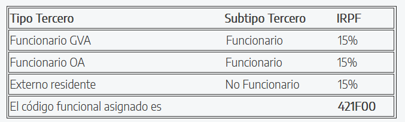
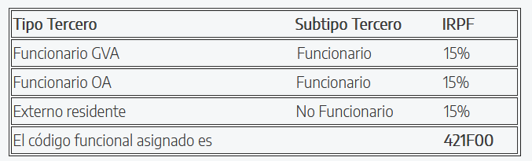

1. Designa "Individual"
Firmado: Antes de la formación.
Si el ponente es no funcionario: Adjuntar informe motivado de la designación.
Requisitos:
Completar todos los campos correctamente (código edición, fecha y lugar).
Detallar el importe total con gastos desglosados.
Envío: A través de Port@Firmas, en cascada:
Visto bueno: Alicia Salvador López y Carmen de la Santa Cruz.
Firma: Jordi Martí Guiu.
Anexos requeridos: Ficha económica.
2. Certifica "Individual"
Firmado: Dentro de los 10 días hábiles posteriores a la formación.
Unificación de documentos: Generar una única minuta y certifica por ponente, si es posible.
Envío: A través de Port@Firmas, en cascada:
Visto bueno: Alicia Salvador López y Carmen de la Santa Cruz.
Firma: Jordi Martí Guiu.
Anexos requeridos:
Ficha económica.
Designa de la edición.
3. Minuta
Creación: Por el asesor/a en GesForm al finalizar el curso.
Proceso de firma: Firmada por el ponente.
Envío: A través de Port@Firmas, en cascada:
Visto bueno: Alicia Salvador López.
Firma: Carmen de la Santa Cruz (cajera) y Jordi Martí Guiu (habilitado).
Anexos requeridos:
Ficha económica.
Certifica.
Archivado: En TEAMS junto al resto de documentación.
 
